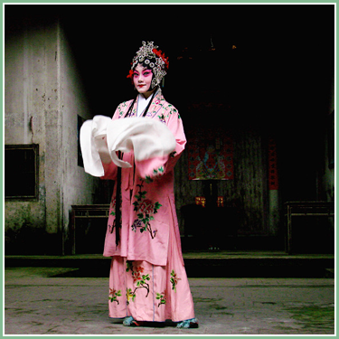
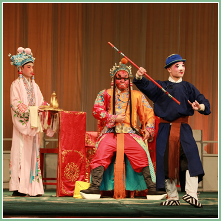

● 汉剧 ●

汉剧湖北省武汉市地方传统戏剧，国家级非物质文化遗产之一。
汉剧，旧称楚调、汉调(楚腔、楚曲)，俗称"二黄"。清代中叶形成于湖北境内，民国时期定名汉剧。汉剧主要流传于湖北省，远及湘、豫、川、陕、湘、粤、皖、赣、闽、黔、晋等省的部分地区。 汉剧传统剧目有660余个，唱腔优美,对白雅致，文本大气，对演员文化素质要求较高， 角色共分为十行，腔调除了西皮、二黄外，罗罗腔也用得较多。伴奏乐器有胡琴、月琴、三弦、鼓板等。
2006年5月20日，汉剧经中华人民共和国国务院批准列入第一批国家级非物质文化遗产名录，编号Ⅳ-30。

历史起源
汉剧属皮簧腔系，早期称"楚腔"、"楚调"，以后又称"汉调"、"汉戏"，俗称"二簧"。在鄂北有"一清二黄三越调"的谚语，在鄂东又有"一清二弹"之说，称汉剧为"乱弹"或"弹戏"。文献记载中曾有"湖广调"、"黄腔"、"皮簧"等称谓。辛亥革命前仍称"汉调"，从民国初年起开始改称"汉剧"。其主要声腔为西皮、二簧，在地方剧种中开创皮、簧合奏之先河，从而形成皮簧声腔系统。汉剧流行于湖北省境内的长江和汉水流域及其邻近的、湖南、陕西、四川等省的部分地区。
相关评价
在中国戏曲发展历史上，汉剧为京剧的形成作出过特殊的贡献，对川剧、滇剧、桂剧、湘剧、粤剧、赣剧等地方戏曲剧种也有不同程度的影响，是研究戏曲板腔体系、戏曲音乐结构演变的重要史料和进行艺术创新的资源。20世纪60年代以来，各地汉剧团急剧减少，至今湖北省境内仅存两个专业汉剧院团，许多剧目和传统技艺正随着老艺人的谢世而失传，急需加以抢救和保护。